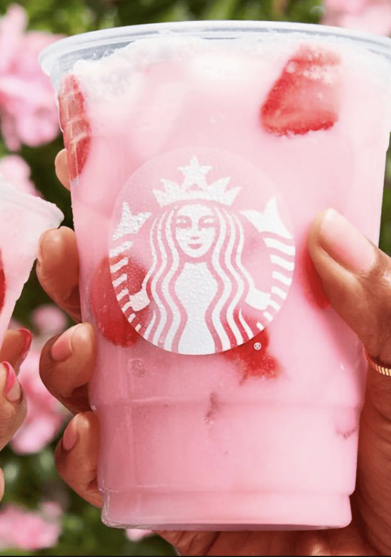

Catergory of Drink
Strabucks offers a variety of beverages based on 4 major categories provided below.

FRESH BREWED COFFEE

ESPRESSO BEVERAGES AND FRAPPUCINO

"Explore a universe of Starbucks drinks on my website, where you can discover new flavors and favorites with just a click"
Scroll to get started
Strabucks offers a variety of beverages based on 4 major categories provided below.
"Welcome to the flavorful frontier of 2023, where I recommend you the latest lineup of must-try drinks curated by Starbucks. From innovative twists on classics to bold new creations, savor the best of Starbucks' offering from last year."
If you love mint chocolate chip ice cream, you need to try this all-new beverage that’s inspired by the nostalgic treat. The drink features coffee, Frappuccino chips, white chocolate mint sauce and mocha drizzle. It’s topped with a chocolate cookie mint sprinkle for added crunch (and whimsy).

This new sipper proves that the taste of macadamia nuts is delicious any time of year. The creamy beverage pairs caffeine-packed cold brew and macadamia syrup for the base, which is topped with white chocolate macadamia cream cold foam and toasted cookie crumbles. If you aren’t typically a fan of bitter, roasty cold brew on its own, this sweet take may be right up your alley.
This dessert-inspired drink hit menus this spring. Flavored with cinnamon caramel syrup, the drink is finished with cinnamon sweet cream cold foam and cinnamon dolce sprinkles. Each sip boasts notes of cinnamon roll filling, caramelized sugar and sweet vanilla icing, stellar foils to bitter, bold cold brew.
Customers rave about Starbucks drinks, praising their diverse range of flavors and satisfying quality. From classics like the Caramel Macchiato to trendy favorites like the Pink Drink, reviewers often highlight the drinks' consistency and the convenience of customization. While some celebrate the innovative combinations, others appreciate the comforting familiarity of traditional options. Overall, Starbucks beverages consistently garner praise for their deliciousness and appeal to a wide range of tastes.

"The Pink Dream from Starbucks is like a sip of pure paradise! Its delicate blend of fruity flavors dances on your taste buds, while the hint of creamy coconut adds a luxurious touch. Refreshing, Instagram-worthy, and utterly addictive – this drink is a pink sensation!"

"Starbucks' Iced Chai is a symphony of spices and sweetness, perfectly chilled for a refreshing indulgence. Each sip is a journey through a fragrant garden of cinnamon, cardamom, and clove, with a creamy undertone that soothes the soul. A true delight for chai aficionados and newcomers alike!"